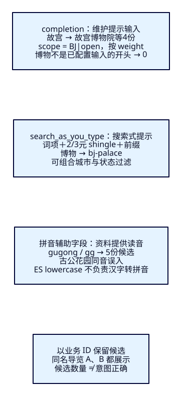
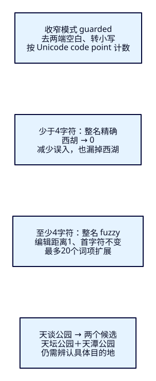

只写半个名字，
提示应该带你去哪？
输入“故宫”“gg”或“天谈公园”，游客还在寻找正确的名称。提示要给出可辨认的候选，同时保留城市、下架和实体身份。本课比较两种提示方式、拼音辅助字段与错字容错，并用误匹配说明：线索相近，目的地未必相同。
学完能证明什么
- 用同一输入比较completion与search_as_you_type，解释中间词、候选次序和总数的不同。
- 让全拼、首字母与整名fuzzy补回候选，逐份指出同音或短词误扩展，并说明收窄规则会漏掉谁。
- 核对城市、同名不同ID与下架更新，让REST、Java和本机卡片保持同一候选契约。
1. 完整叫法能找到，游客却还没打完
F16已经能处理完整别名与同义表达。游客在输入框只写“故宫”时，希望看到可以继续选择的目的地；写“gg”可能想用首字母，写“天谈公园”可能打错了字。把这些输入直接送进完整名称查询，容易没有结果；放宽所有条件，又会把同音商户、外地景点或下架资料推到眼前。
ES在这里负责按已建立的索引表达寻找候选。什么是一个景点、名称怎样读、下架状态怎样维护，仍由业务资料决定。提示是搜索前的一次候选检索；选中后还应核对具体业务ID与当前资料。本课用课程提供的观察窗比较请求与候选，不安排输入框防抖、门户开发或订单流程。
2. 先想清楚：补名字、搜文档，还是换一条线索
completion把资料方提供的input组织成专用补全结构，按输入开头找建议，并用显式weight影响次序。给“故宫博物院”配置“故宫博物院”“故宫”两个输入，就能让游客从这些开头进入。它不是任意子串查询，也不会自动生成拼音。本课不启用它自身的fuzzy选项，以便分别观察前缀与整名容错。
search_as_you_type是适合搜索式提示的字段类型：保留根字段，再自动创建相邻词组的shingle子字段与前缀子字段。shingle是相邻词项连成一组，例如本课standard逐字切中文，2元组含“故 宫”“宫 博”。它仍用普通query返回文档，可以组合城市、状态等filter；能匹配中间词项的前缀，不等于任意字符子串。官方字段说明列出自动子字段。
拼音辅助字段存另一种可检索表达；fuzzy按词项的字符编辑距离找近似项。前者处理读音线索，后者处理有限的增、删、替换或相邻换位；都不能证明两个名字属于同一实体。先分开观察，避免把同音、前缀与错字都塞进一条不可解释的大查询。

3. 固定意图，再辨认每一份候选
14份虚构资料，不陈述真实景点的读音、价格或经营状态。城市BJ/SY、状态open/closed，全部CNY，价格为整数分。一主零副本、strict、refresh=-1；补全最多10条，其他查询最多20份并精确计数、按业务ID升序。比较候选集合，普通搜索的ID次序不代表相关性排名。
| ID / 名称 | 全拼 / 首字母 | 城市 / 状态 / 分 / weight |
|---|---|---|
| bj-palace 故宫博物院 | gugongbowuyuan ggbwy | BJ / open / 6000 / 90 |
| bj-gate 故宫东门 | gugongdongmen ggdm | BJ / open / 1000 / 80 |
| bj-same-a 故宫导览 | gugongdaolan ggdl | BJ / open / 2000 / 70 |
| bj-same-b 故宫导览 | gugongdaolan ggdl | BJ / open / 3000 / 60 |
| bj-closed 故宫夜游 | gugongyeyou ggyy | BJ / closed / 5000 / 1000 |
| sy-palace 故宫博物院 | gugongbowuyuan ggbwy | SY / open / 5000 / 900 |
| bj-infix 老城故宫展 | laochenggugongzhan lcggz | BJ / open / 1000 / 50 |
| bj-garden 古公花园 | gugonghuayuan gghy | BJ / open / 0 / 40 |
| bj-temple 天坛公园 | tiantangongyuan ttgy | BJ / open / 1500 / 30 |
| bj-pond 天潭公园 | tiantangongyuan ttgy | BJ / open / 0 / 20 |
| bj-west 西湖 | xihu xh | BJ / open / 0 / 15 |
| bj-river 西河 | xihe xh | BJ / open / 0 / 14 |
| bj-north 北湖 | beihu bh | BJ / open / 0 / 13 |
| bj-hotel 西湖酒店 | xihujiudian xhjd | BJ / open / 0 / 12 |
每份name_sayt等于name，suggest.input默认为单元素名称；只有bj-palace额外提供“故宫”。scope由城市与状态拼成，例如BJ|open。两份“故宫导览”是不同业务ID，需分别保留；“古公花园”同音却不符合故宫意图；“天谈公园”意图事先定为bj-temple，bj-pond是歧义候选。固定判断在正式两轮前落盘；样本经过机制探索，不冒充盲评或整体质量评估。
4. f17-c01：建立本课独立的提示表达
独立节点19217与索引tut-f17-attractions，不改F14–F16的插件、词典或规则。本课只用ES9.4.0/Lucene10.4.0内置能力，不需要新插件。需要Docker/Compose、Bash、curl、Python3.10+，Java应用仍用JDK25。先启动、等待集群恢复，再运行01；已有本课索引时先按末节点名清理。
cd projects/travel-search
export ES_URL=http://127.0.0.1:19217
docker compose -f infra/f17/compose.yaml up -d es
bash infra/f17/wait.sh
bash labs/f17/01-prefix.sh01依次检查版本与无额外插件，PUT索引、等本索引green、Bulk14项全created、显式refresh、count14，并核对有效mapping/settings。重复PUT已存在索引会400，Bulk使用create也不覆盖旧资料；不要忽略错误继续拿上轮数据比较。以下是完整配置；latin_lower只做小写归一，name.whole用来对整名做精确与fuzzy对照。
{
"settings": {
"number_of_shards": 1,
"number_of_replicas": 0,
"refresh_interval": "-1",
"analysis": {
"normalizer": {
"latin_lower": {
"type": "custom",
"filter": [
"lowercase"
]
}
}
}
},
"mappings": {
"dynamic": "strict",
"properties": {
"attraction_id": {
"type": "keyword"
},
"name": {
"type": "text",
"analyzer": "standard",
"fields": {
"whole": {
"type": "keyword",
"normalizer": "latin_lower"
}
}
},
"name_sayt": {
"type": "search_as_you_type",
"analyzer": "standard",
"max_shingle_size": 3
},
"pinyin_full": {
"type": "keyword",
"normalizer": "latin_lower"
},
"pinyin_initials": {
"type": "keyword",
"normalizer": "latin_lower"
},
"city_code": {
"type": "keyword"
},
"status": {
"type": "keyword"
},
"currency": {
"type": "keyword"
},
"ticket_price_fen": {
"type": "integer"
},
"suggest": {
"type": "completion",
"analyzer": "standard",
"search_analyzer": "standard",
"preserve_separators": true,
"preserve_position_increments": true,
"max_input_length": 50,
"contexts": [
{
"name": "scope",
"type": "category"
}
]
}
}
}
}完整Bulk文件保留14份文档与稳定ID。最小手工写入路径是POST /tut-f17-attractions/_bulk，Content-Type为application/x-ndjson；文件保留末尾换行。随后POST /tut-f17-attractions/_refresh与GET /tut-f17-attractions/_count。下面展示其中一份完整_source与create元数据，不能只给name而漏掉提示上下文。
{"create": {"_id": "bj-palace"}}
{"attraction_id": "bj-palace", "name": "故宫博物院", "name_sayt": "故宫博物院", "pinyin_full": "gugongbowuyuan", "pinyin_initials": "ggbwy", "city_code": "BJ", "status": "open", "currency": "CNY", "ticket_price_fen": 6000, "suggest": {"input": ["故宫博物院", "故宫"], "weight": 90, "contexts": {"scope": ["BJ|open"]}}}5. completion：先限定可见范围，再谈去重
先预测“故宫/BJ”会出现谁。下面请求只允许scope=BJ|open；实际顺序为bj-palace、bj-gate、bj-same-a、bj-same-b，weight依次90、80、70、60。bj-palace返回的建议text为“故宫”，卡片展示_source.name“故宫博物院”。建议文字和实体名称并不要求相等。
{
"size": 0,
"suggest": {
"places": {
"prefix": "故宫",
"completion": {
"field": "suggest",
"size": 10,
"skip_duplicates": false,
"contexts": {
"scope": [
"BJ|open"
]
}
}
}
}
}别用顶层size=0误判没有建议：它只关闭普通hits，候选在suggest.places[0].options。completion.size=10是本次返回上限，不是全部候选总数；本课DTO把total设为null。补全_score来自这里的weight，不与普通query的分数混作同一种相关性指标。
下面故意把scope放宽到三个类别，并同时加上城市/open/CNY的query过滤。普通hits受query约束，建议却仍先出现bj-closed与sy-palace。原因是completion使用自己的上下文查询，顶层query没有替它过滤候选；先取少量建议再在Java删掉下架资料，也可能使本该出现的候选挤不进上限。
{
"size": 0,
"suggest": {
"places": {
"prefix": "故宫",
"completion": {
"field": "suggest",
"size": 10,
"skip_duplicates": false,
"contexts": {
"scope": [
"BJ|open",
"BJ|closed",
"SY|open"
]
}
}
}
},
"query": {
"bool": {
"filter": [
{
"term": {
"city_code": "BJ"
}
},
{
"term": {
"status": "open"
}
},
{
"term": {
"currency": "CNY"
}
}
]
}
}
}去重还要先问“什么算重复”。保持skip_duplicates=false，两个同名导览ID都在；改为true，实际只剩bj-palace、bj-gate、bj-same-a，bj-same-b被按建议文字合并。本课展示实体候选，因此保留不同ID，Java再用LinkedHashMap按业务ID保留首项。在当前单节点样本中同一文档的两个输入只返回一个option，不把这次结果夸成已经触发了跨来源重复ID合并。若产品只要一条文字建议，可另选文本去重口径。官方补全说明提供context与skip_duplicates入口。
6. search_as_you_type：让“博物”也成为线索
01实际分析name_sayt及其三个子字段：根字段是故/宫/博/物/院；_2gram含故 宫、宫 博、博 物、物 院；_3gram含故 宫 博、宫 博 物、博 物 院；_index_prefix为词组建立前缀，也覆盖末尾词项。这里_analyze读取当前字段分析配置，不冒充旧文档历史词项。请求为POST /tut-f17-attractions/_analyze，body例如{"field":"name_sayt._2gram","text":"故宫博物院"}。
{
"size": 20,
"track_total_hits": true,
"track_scores": true,
"query": {
"bool": {
"must": [
{
"multi_match": {
"query": "博物",
"type": "bool_prefix",
"fields": [
"name_sayt",
"name_sayt._2gram",
"name_sayt._3gram"
],
"operator": "and"
}
}
],
"filter": [
{
"term": {
"city_code": "BJ"
}
},
{
"term": {
"status": "open"
}
},
{
"term": {
"currency": "CNY"
}
}
]
}
},
"sort": [
{
"attraction_id": "asc"
}
]
}multi_match/bool_prefix在各字段上处理输入，最后一个分析词项做前缀，其余按operator=and组合；字段之间由multi_match组合，不要求所有子字段都命中。它不强制整段短语顺序。输入“博物”实际得到bj-palace；completion对同一输入为0，因为没有配置以“博物”开头的input。输入“故宫”时，search_as_you_type多出bj-infix：老城故宫展的中间词项可以参与。是否需要短语顺序，应另用适合的查询对照，不能把bool_prefix解释成完整phrase。
7. f17-c02：读音从资料来，原名留给人辨认
bash labs/f17/02-pinyin.sh本课由固定资料显式提供gugongbowuyuan/ggbwy，而不是临时安装一个能猜所有名称读音的插件。ES的lowercase只把GuGong变为gugong；把“故宫”送进pinyin_full的_analyze仍是“故宫”，不会变成拼音。生产中可由应用的转写库、审核流程或专门分析插件生成这些字段，但多音字、别名、ü/v及外文规则必须另定。本课仅验证已给定的ASCII表达；不认证自动转写质量。
{
"size": 20,
"track_total_hits": true,
"track_scores": true,
"query": {
"bool": {
"must": [
{
"bool": {
"should": [
{
"prefix": {
"pinyin_full": {
"value": "gugong"
}
}
},
{
"prefix": {
"pinyin_initials": {
"value": "gugong"
}
}
}
],
"minimum_should_match": "1"
}
}
],
"filter": [
{
"term": {
"city_code": "BJ"
}
},
{
"term": {
"status": "open"
}
},
{
"term": {
"currency": "CNY"
}
}
]
}
},
"sort": [
{
"attraction_id": "asc"
}
]
}主name字段搜gugong为0；本请求同时查全拼与首字母，minimum_should_match=1让其中一路必须成立，不能因为外层已有filter而意外把should变成可选。“gugong”和“gg”都返回bj-garden、bj-gate、bj-palace、bj-same-a、bj-same-b。古公与故宫同音，更多输入线索仍未完成实体消歧。原名、城市和ID应一起显示，首字母也不是唯一键。
Java先去两端空白、转小写，拼音模式只接受2至40个ASCII字母；“GuGong”可用，“gu gong”或中文在此模式报400。范围限制是本课契约，不是ES通用限制。读音或首字母变更要更新文档并等待refresh；只改本地样本文件不会更新索引。给现有索引新增辅助字段也不会自动补齐历史文档，需要明确重新写入受影响资料。
8. f17-c03：拼错一个字，可能得到两个目的地
bash labs/f17/03-fuzzy-and-close.sh“天谈公园”整名精确查询为0；把name.whole整条keyword词项允许一次编辑，实际得到bj-pond与bj-temple。替换谈→坛补回目标，替换谈→潭也符合距离。排序按ID，因此天潭在前不能被解释为“ES认为天潭更正确”。fuzzy官方说明定义字符编辑及参数；此处value在Java中归一，未用中文分词把整名拆开。
{
"size": 20,
"track_total_hits": true,
"track_scores": true,
"query": {
"bool": {
"must": [
{
"fuzzy": {
"name.whole": {
"value": "天谈公园",
"fuzziness": "1",
"prefix_length": 0,
"max_expansions": 20,
"transpositions": true,
"rewrite": "constant_score_blended"
}
}
}
],
"filter": [
{
"term": {
"city_code": "BJ"
}
},
{
"term": {
"status": "open"
}
},
{
"term": {
"currency": "CNY"
}
}
]
}
},
"sort": [
{
"attraction_id": "asc"
}
]
}把value换成“西胡”，fuzziness=1会得到bj-river、bj-west：“西河”和“西湖”都只差一个字，目标占两个字中的一半已允许改动。max_expansions=20限制词项扩展数量，不是20份文档、20毫秒或质量保证。同样两字用AUTO实际为0；不要把显式1的行为归给AUTO，更不要把字符相似当成语义纠错。
也不能只在bool_prefix上加fuzziness=1就宣称完成中文纠错。附加对照中，“天谈公园”会多入古公花园；实际_validate/query改写显示根字段前面的一字词项扩成多种字，而最后的园仍做前缀。把错字放到最后，输入“天坛公圆”则为0：fuzziness不作用于最后那个前缀子查询。案例保留两份完整DSL与两份真实改写；官方bool_prefix参数说明也明确这个边界。不要据此推导所有分词方案行为相同。
9. 收窄容错，得同时承认漏召回
guarded是本课显式策略：不足4个Unicode code point用整名精确；至少4个才允许整名距离1，并要求第一个字符不变。西胡于是0，减少西河误入，也漏掉西湖；天谈公园仍得到天潭与天坛。这个阈值不是ES默认或最佳实践结论，只用于展示取舍。首字符打错会被prefix_length=1排除，长名称两个错字也可能漏掉；多码点的组合字符还需要另定产品长度规则。

原输入应保留，容错候选让游客辨认；当前观察窗明确选择模式，不暗中把精确与模糊结果拼成“已经纠正”的答案。真实产品可设计分层回退，再用标注查询集评估；本课不提前实现F18之后的评分权重与F22评估。小样本能证明机制和坏案例，不能证明阈值适合全站。
10. 下架是资料更新，也包括提示表达
03最后将bj-gate下架。同一_update同时改status与suggest.contexts：避免普通query已排除，completion还沿旧scope提示。当前所有资料都是CNY；若未来增加币种、预算、权限等条件，需要为补全设计相应上下文或独立候选资料，不能认为任意query过滤会自动生效。Java还检查返回原文的城市/open/CNY，不一致时报502，不通过取完前10后静默丢项来伪装正确过滤。
{
"doc": {
"status": "closed",
"suggest": {
"input": [
"故宫东门"
],
"weight": 80,
"contexts": {
"scope": [
"BJ|closed"
]
}
}
}
}自动refresh已关闭。更新后GET /tut-f17-attractions/_doc/bj-gate立即能看到closed和BJ|closed，搜索提示仍有旧东门；POST /tut-f17-attractions/_refresh之后，completion剩bj-palace、bj-same-a、bj-same-b，search_as_you_type搜故宫剩bj-infix、bj-palace、bj-same-a、bj-same-b。refresh使本次写入可搜索，不会替业务补写遗漏的上下文。
作者另做了真实反例：仅把bj-palace.status改closed、保留BJ|open后refresh，普通搜索排除它，completion仍取到它，Java按不一致契约返回SEARCH_INCOMPLETE/502；重新写回完整资料并refresh，同一Java进程恢复。这个附加反例不计64教学请求，记录在两轮extra中。正确更新无需重建整库；更换索引表达时仍要区分新配置与历史资料。
11. 用官方Java客户端保留两种响应形态
沿用Boot4.0.8、Temurin25.0.4.1+1、官方Java及Rest5 Client9.4.8、Wrapper3.3.4/Maven3.9.11。ES容器自带JVM与应用JDK分别记录。接口POST /api/attractions/suggestions接收q、BJ/SY城市和六种模式；索引、字段、上下文、上限由服务端固定，浏览器不能上传任意DSL。
package dev.esweb.travel;
import jakarta.validation.constraints.*;
import com.fasterxml.jackson.annotation.JsonIgnore;
public record SuggestInput(
@NotBlank @Size(max = 60) String q,
@NotNull @Pattern(regexp = "BJ|SY") String cityCode,
@NotNull @Pattern(regexp = "completion|sayt|pinyin|exact|fuzzy|guarded") String mode) {
@JsonIgnore
@AssertTrue(message = "拼音模式只接收2至40个ASCII英文字母")
public boolean isPinyinValid() {
return !"pinyin".equals(mode) || q != null && q.strip().matches("[A-Za-z]{2,40}");
}
} public String normalized(SuggestInput input) { return input.q().strip().toLowerCase(Locale.ROOT); }
public SearchRequest request(SuggestInput input) {
String q = normalized(input);
if (input.mode().equals("completion")) {
var scope = CompletionContext.of(c -> c.context(v -> v.category(input.cityCode() + "|open")));
return SearchRequest.of(s -> s.index(INDEX).size(0).suggest(g -> g.suggesters("places",
f -> f.prefix(q).completion(c -> c.field("suggest").size(10).skipDuplicates(false)
.contexts("scope", List.of(scope))))));
}
Query lexical = switch (input.mode()) {
case "sayt" -> Query.of(qb -> qb.multiMatch(m -> m.query(q).type(TextQueryType.BoolPrefix)
.fields("name_sayt", "name_sayt._2gram", "name_sayt._3gram").operator(Operator.And)));
case "pinyin" -> Query.of(qb -> qb.bool(b -> b
.should(v -> v.prefix(p -> p.field("pinyin_full").value(q)))
.should(v -> v.prefix(p -> p.field("pinyin_initials").value(q))).minimumShouldMatch("1")));
case "exact" -> Query.of(qb -> qb.term(t -> t.field("name.whole").value(q)));
case "guarded" -> q.codePointCount(0, q.length()) < 4
? Query.of(qb -> qb.term(t -> t.field("name.whole").value(q))) : fuzzy(q, 1);
case "fuzzy" -> fuzzy(q, 0);
default -> throw new IllegalArgumentException("Unknown suggestion mode");
};
return SearchRequest.of(s -> s.index(INDEX).size(20).trackTotalHits(t -> t.enabled(true)).trackScores(true)
.query(v -> v.bool(b -> b.must(lexical)
.filter(f -> f.term(t -> t.field("city_code").value(input.cityCode())))
.filter(f -> f.term(t -> t.field("status").value("open")))
.filter(f -> f.term(t -> t.field("currency").value("CNY")))))
.sort(v -> v.field(f -> f.field("attraction_id").order(SortOrder.Asc))));
}
private Query fuzzy(String q, int prefixLength) {
return Query.of(v -> v.fuzzy(f -> f.field("name.whole").value(q).fuzziness("1")
.prefixLength(prefixLength).maxExpansions(20).transpositions(true).rewrite("constant_score_blended")));
}
completion读suggest，普通搜索读hits；两者都保留ID、原名、拼音、城市、整数分、score与实际请求。completion不伪造total，returnedCount只数本次保留候选。代码按ID保留首个候选，保持各模式自己的顺序；不会将同名不同ID合成一份，也不会用补全weight给普通结果作跨模式排名。
private Card card(SuggestInput input, String id, SuggestAttraction source, Double score,
String text, List<Object> sort) {
// Reject inconsistent context/source data instead of filtering after a limited top-N lookup.
if (source == null || id == null || !id.equals(source.attractionId()) || source.name() == null
|| source.pinyinFull() == null || source.pinyinInitials() == null || source.ticketPriceFen() == null
|| source.ticketPriceFen() < 0 || !input.cityCode().equals(source.cityCode())
|| !"open".equals(source.status()) || !"CNY".equals(source.currency()) || score == null)
throw new AttractionSearchService.IncompleteSearchException();
return new Card(id, source.name(), source.pinyinFull(), source.pinyinInitials(), source.cityCode(),
source.ticketPriceFen(), source.currency(), source.status(), score, text, sort);
}
public Result search(SuggestInput input) throws IOException {
var request = request(input);
var response = client.search(request, SuggestAttraction.class);
if (response.timedOut() || response.shards().failed().longValue() != 0)
throw new AttractionSearchService.IncompleteSearchException();
List<Card> raw = new ArrayList<>();
Long total = null;
String relation = "not_available";
boolean completion = input.mode().equals("completion");
if (completion) {
var entries = response.suggest().get("places");
if (entries == null || entries.size() != 1 || !entries.getFirst().isCompletion())
throw new AttractionSearchService.IncompleteSearchException();
for (var option : entries.getFirst().completion().options()) {
if (option.text() == null) throw new AttractionSearchService.IncompleteSearchException();
raw.add(card(input, option.id(), option.source(), option.score(), option.text(), List.of()));
}
} else {
if (response.hits().total() == null) throw new AttractionSearchService.IncompleteSearchException();
total = response.hits().total().value(); relation = response.hits().total().relation().jsonValue();
for (var hit : response.hits().hits()) {
List<Object> sort = hit.sort().stream().map(v -> (Object) v._get()).toList();
raw.add(card(input, hit.id(), hit.source(), hit.score(), null, sort));
}
}
var byId = new LinkedHashMap<String, Card>();
for (Card item : raw) byId.putIfAbsent(item.id(), item);
var items = List.copyOf(byId.values());
return new Result(input, normalized(input), completion ? 10 : 20, raw.size(), items.size(), total,
relation, response.took(), "business-id", json.readTree(JsonpUtils.toJsonString(request, client._jsonpMapper())),
json.readTree(JsonpUtils.toJsonString(response, client._jsonpMapper())), items);
}完整Controller把非法输入映射400；ES拒绝（如缺索引）502，连接/transport异常503，超时/分片失败/契约不完整502。0候选仍为200。真实400、缺索引502、陈旧上下文502、停机503与同进程恢复均另有收据；执行超时、部分分片失败只有代码防护，未声称构造成功。esResponse是客户端结构化响应的再序列化，completion键会带completion#places，不宣称与HTTP原始字节相同。
12. 用观察窗核对候选，别只看卡片数量
# 第二终端，从仓库根目录开始；JAVA_HOME/PATH先选择JDK25
cd projects/travel-search/backend
./mvnw -B -ntp clean package
ES_URL=http://127.0.0.1:19217 APP_PORT=18080 java -jar target/travel-search-0.7.0.jar
# 第一终端仍在projects/travel-search
bash labs/f17/04-java.sh
# 可选手工重复，不计64
curl --fail-with-body -sS -X POST http://127.0.0.1:18080/api/attractions/suggestions -H 'Content-Type: application/json' --data-binary @search/f17/input-pinyin.json打开http://127.0.0.1:18080/f17.html。按01→02→03执行后，东门已经下架：故宫/completion三份，博物/sayt仅bj-palace，GuGong或gg/pinyin四份且包含古公花园。再比较天谈公园的exact/fuzzy/guarded、西胡的fuzzy/guarded，并切SY观察城市范围。04共11组，每组实际调用一次Java，再把其DSL重放REST，核对完整卡片、次序、score、sort与计数。
改变输入、城市或模式即清空旧卡片和请求；错误也清空旧结果，显示真实状态码。观察区保留完整DTO、实际DSL与客户端响应，建议文字与_source名称分别显示。浏览器只调用同源Java，ES地址和凭据保留在本机服务；Pages只承载教程与图解。这里点击提交触发请求，读者不用开发输入交互。
13. 点名清理，让下架资料回到初始状态
cleanup仅DELETE tut-f17-attractions并GET404，不删其他索引或数据卷。清理后从01重建，bj-gate恢复open；03再次下架。初次与重做不能混用预期，重复01的资源已存在错误不能当成通过。
# 在projects/travel-search；Java保持同一进程即可
bash labs/f17/cleanup.sh
bash labs/f17/01-prefix.sh
bash labs/f17/02-pinyin.sh
bash labs/f17/03-fuzzy-and-close.sh
bash labs/f17/04-java.sh
# 结束：清理本课索引，另关闭自己启动的Java
bash labs/f17/cleanup.sh
docker compose -f infra/f17/compose.yaml stop es64教学请求=01的19＋02的6＋03的17＋11组Java/REST的22；清理、探活、Java内部调用、构建、可选curl、浏览器及作者附加另计。真实两轮各64教学＋51附加，点名清理前后各2另计。图解、阅读与观察窗分别验收；单节点/小语料不认证性能、全站质量、自动拼音或多节点提示更新。
固定版本源码与证据入口
SearchAsYouTypeFieldMapper.Builder.build建立根字段、shingle与prefix表达；CompletionSuggester.innerExecute/suggest使用补全自己的query与collector；MatchBoolPrefixQueryBuilder.doToQuery配置BOOLEAN_PREFIX解析；FuzzyQueryBuilder.doToQuery将字段与距离参数交给词项查询。四个本地目标文件与官方v9.4.0逐字节一致，见来源记录；源码不替代实际候选与响应。
能力检查：换一个条件，解释多出或少了谁
1. 在completion旁边加status=open的query，为什么还出现下架建议？
query约束普通hits；completion用自己的context。把city/status投影成正确scope并在suggest中点名，更新资料时同步维护，不能只在返回后删掉前10中的下架项。
2. skip_duplicates=true少了一份故宫导览，是同一实体去重成功吗？
不是。bj-same-a与bj-same-b业务ID不同，却拥有相同建议文字。本课要实体候选，所以false并按ID保留；文字提示可以采用另一种契约。
3. 为什么博物能搜到博物院，但completion为0？
search_as_you_type可在中间词项位置做前缀匹配；completion的已配置input都不从博物开始。都不是任意字符子串保证，分词边界会改变结果。
4. 把故宫交给lowercase normalizer，能得到gugong吗？
不能。本课全拼与首字母来自资料；normalizer只小写已有字母。故宫仍是故宫，古公同音也不代表实体相同。
5. 西胡从0变成西河和西湖，应报告容错完全改善吗？
不能。补回bj-west，同时误入bj-river；guarded减少这次误扩展却也漏掉目标。精确、显式距离1、AUTO和guarded应分别记录。
6. 独立解释天坛公圆在bool_prefix加fuzziness后为何还是0。
最后分析词项圆仍作前缀查询，fuzziness不作用于它。前面的词项即使模糊扩展，也不能替换最后的圆为园。用完整改写与ID核对，不把它理解成整名编辑距离。
7. 只把bj-gate.status改closed再refresh，提示范围会自动改吗？
不会。status与suggest.contexts是不同索引表达。正确操作同时更新二者；漏写上下文时Java会对不一致候选报502。清理后01恢复open，03才再次下架。
实际陷阱
completion用scope，普通query用filter。同步更新资料表达并refresh；局部GET可见不等于搜索视图已变，refresh也不会修复缺失的context。
同名可有不同ID；不同input可指同一资料。返回10条不表示只有10条；completion总数未知，不能借普通hits.total=0显示“没有建议”。
拼音字段不保留原汉字差异，短词距离1容易扩得很宽；bool_prefix最后前缀也不由fuzziness纠错。阈值要同时报告补回、误入与漏掉的候选。
速记与下一课
| 问题 | 选择与证据 |
|---|---|
| 从已维护名称开头提示 | completion/input/context/weight；读取suggest而非hits |
| 用中间词项与未输完的词检索 | search_as_you_type＋bool_prefix；根字段与shingle子字段 |
| 用全拼或首字母找候选 | 资料提供辅助字段；同音与同首字母不保证唯一 |
| 整名有限错字 | keyword词项fuzzy；短词误入、首字符与扩展上限分别核对 |
| 去重与下架 | 先定实体/文字口径；同步更新状态与scope，再refresh |
先说明输入提供了哪种线索，再用原名、城市和ID验证候选。阶段三现在能解释中文、词典、别名、读音与容错各自的漏召回和误召回；候选已经回来，谁该排在前面仍没有回答。下一课F18进入BM25与_explain，不把本课按ID排序或补全weight当成完整相关性方案。